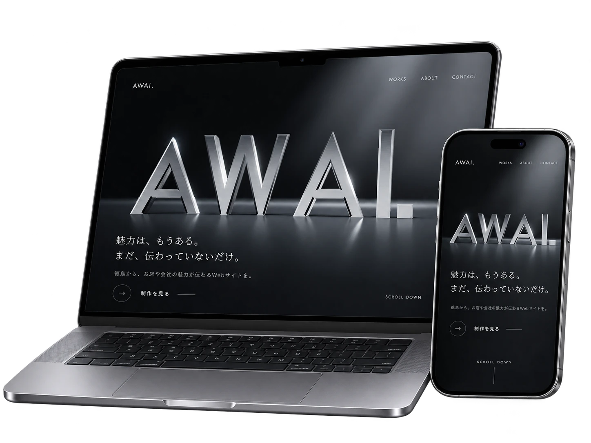
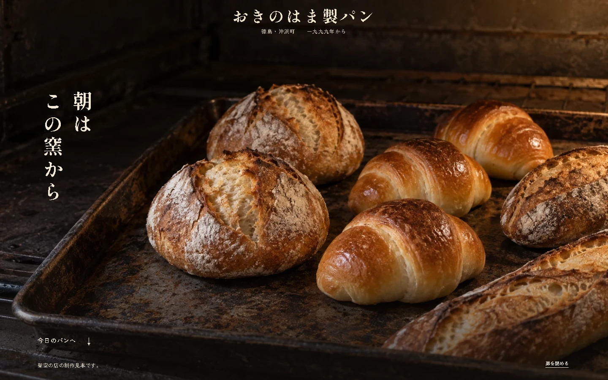
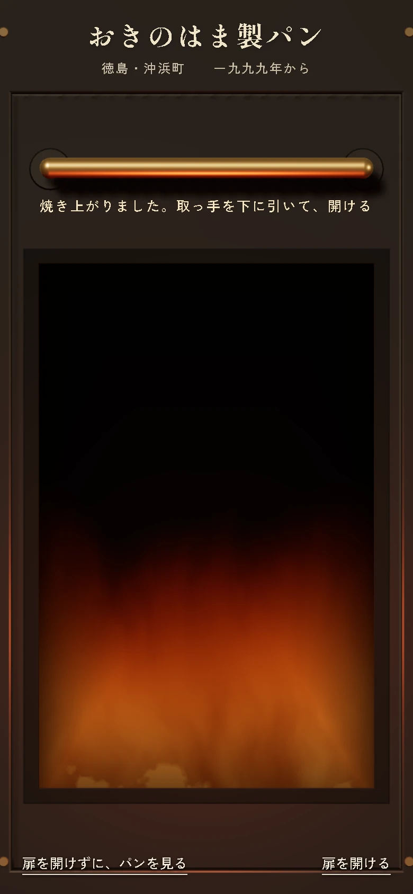
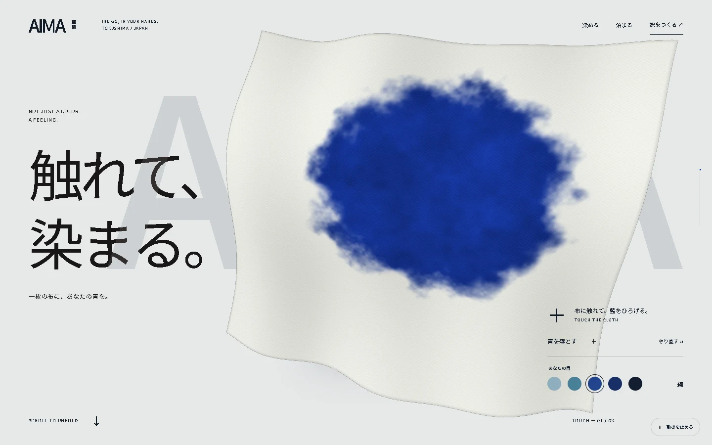

TOKUSHIMA ｜ WEB・DESIGN
あなたのお店 なら、
こう作ります。
徳島で、

画面は、
CHOOSE YOUR SHOP
近い業種を選んでください。
その


業種を選ぶ
WHY AWAI
頼む前に、分かっていること
電話はしません
相談も打ち合わせも、LINEとメールの文字だけで進みます。言った言わないが起きませんし、手の空いた夜に読んで返していただけます。
金額は、作りはじめる前に
見積もりには削れる所まで書いておきます。途中で追加が出たときも、手を動かす前に金額をお伝えします。
公開したあとも、自分で直せます
営業時間やお知らせは、Googleの表を書き換えると数分でサイトに出ます。文章を送るだけでいい月額の更新も用意しました。
WORKS ｜ これまでに作ったもの
- パン屋
- 珈琲豆店
- 焼き菓子店
- 美容室
- ピラティス
- ボディケアサロン
- 塗装会社
- 運送会社
- 藍染の宿
- アパレル
- 天文台
11件のうち、実際のご依頼は1件（北島町のボディケアサロン様）。残りは業種を想定して自分で作った見本です。架空の店かどうかは、作品ごとに書いています。
SELECTED WORKS
まず見てほしい3件
触った

AIMA — 藍間
画面の布に触れると、触れた所から藍がにじみます。染めるという店の仕事を、そのまま操作にしました。
触れて、染めてみる
撫養の菓子箱
鳴門金時の焼き菓子店。お菓子1つにつき1ページあり、お知らせや包みまで入れて19ページあります。
お菓子を1つ選ぶ
青葉運輸
運送会社。荷物を預けたい会社と、ここで働きたい人。読みたいものが違うので、入口から道を分けました。
6ページを歩く並んでいるのは、自分で題材を決めて作った見本です。実際にご依頼をいただいた仕事は、STUDIO FREE 様（北島町のボディケアサロン）の縦型広告動画が1件。受注実績として架空の店を並べることはしません。
まず、いまのお店の写真を1枚送ってください。
作れる物と金額を、文字でお返しします。「話だけ聞きたい」でも大丈夫ですし、ここまでは無料です。